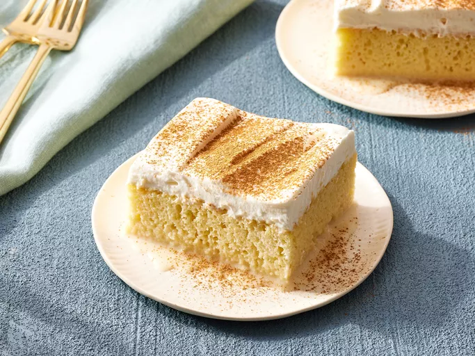

Home
Tres leches Cake Recipe

Description
This dish represents the most amazing cake in existence. Those that
disagree have not been open-minded.
Ingredients
- 1 1/2 cups all-purpose flour
- 1 teaspoon baking power
- 1/2 cup unsalted butter
- 2 cups white sugar
- 5 large eggs
- 1 1/2 teaspoon vanilla extract
- 2 cups whole milk
- 1 (14 oz) can sweetened condensed milk
- 1 (12 fl oz) can evaporated milk
- 1 1/2 cups heavy whipping cream
Steps
- Gather ingredients!
-
Preheat the oven to 350F(175C). Grease and flour a 9x13-in
baking pan.
- Sift flour and baking powder together; set aside.
-
Beat sugar and butter together in a large bowl with an electric
mixer until lighter in color and fluffy. Add eggs and vanilla;
beat well. Add flour micture, about 1/2 cup at a time, mixing
until well blended.
- Pour batter into the prepared pan.
-
Bake in the preheated oven until a toothpick inserted into the
center comes out clean, about 30mins. Pierce cake all over with
a fork; let cool to room temperature.
-
Mix whole milk, condensed milk, and evaported milk together ina
bowl.
-
Pour the whole milk, condensed milk, and evaported milk mixture
over the top of the cooled cake and allow to soak in.
-
Whip cream, remaining 1 cup of sugar, and 1 teaspoon vanilla in
a chilled glass or metal bowl with an electric mixer until
thick.
-
When milk mixture has soaked in, spread cream on top of the
cake.
-
Keep cake refrigerated until ready to serve! Sprinkle ground
cinnamon over top of the cake before slicing. Enjoy!